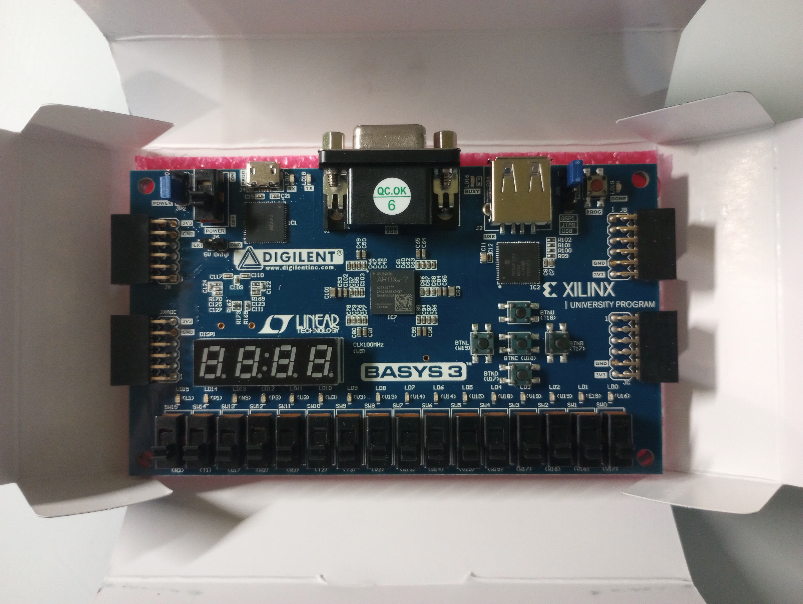

So, what can this CPU actually do? So far we’ve only talked about the development of the CPU itself, but not much of what it could/would be used for. A CPU isn't built just to exist; it's built to do something.
Now, let's be real, you won't be playing the latest AAA game on this, because obviously our CPU doesn’t come close to that level. After all, you can’t expect two brothers to match the level of Intel or AMD chips using an FPGA board in their bedroom. But our CPU isn’t entirely useless either:
For starters, it can run any algorithm. In theory, our CPU is turing-complete, which means that given enough time and memory, it can compute anything that is computable by any other computer, from a supercomputer to a modern desktop CPU.
It can also execute complex programs. Any application, from a calculator to a game like Tic-Tac-Toe or Pong, can be broken down into a very long series of the simple instructions (ADD, SUB, LOAD, STORE, JUMP) that our CPU can understand
Its Memory-Mapped I/O capability means it can potentially control any peripheral you connect to it (like screens, sensors, motors, keyboards) by reading from and writing to specific addresses.
Sure, we've built what amounts to a powerful microcontroller from the 1970s. But it's a crucial first step on the path to our next ambitious projects. This is where revolutions begin. Everyone starts somewhere, and we're proud to have begun.
August 6, 2025
Bringing it all together
We have officially created all of the modules necessary for creating a finished 8-bit CPU! For the final assembly, we created a Top-Level Module which is the schematic that wires every single component together. This module has no logic itself; its purpose is to connect the outputs of one module to the inputs of another, according to the CPU design we've planned from the start. This module also defines the connections externally (stuff on-board of the FPGA): the physical clock, reset button, and LEDs.
The top-level module is a series of wire declarations and module instantiations. It's the Verilog equivalent of taking all our built chips and soldering them together onto a final motherboard.
Here’s what our Top-Level Module Verilog file looks like in Vivado:
Here is how our files are organized in our directory:
We managed to Generate Bitstream with no synthesis or implementation errors. What a great life we are living!
August 1, 2025
Project 7: Data Memory & Memory-Mapped I/O
We could’ve finished earlier but we got a little preoccupied, but we finally finished the Data Memory (RAM), which is different from the instruction memory (ROM). More importantly, we use a trick called Memory-Mapped I/O to let the CPU communicate with the outside world.
The RAM module looks similar to the ROM but has a critical difference: it can be written to. It has mem_read and mem_write control signals.
The magic of Memory-Mapped I/O happens by reserving a special memory address. In our design, we decided that any write to address 8'h80 (128) doesn't go to normal RAM. Instead, it is routed to the LED outputs on the FPGA board. The CPU doesn't need special "output" instructions; it just does a STORE to address 128, and the hardware takes care of the rest.
We learned that the memory-mapped I/O is a powerful concept that abstracts hardware behind simple memory accesses. It showed us how the CPU can control anything (LEDs, VGA, speakers) by simply reading and writing to specific, special addresses. We implemented this because it replicates how real computers work.
July 23, 2025
Project 6: The Control Unit
We finally finished the Control Unit! While we are still a week behind on schedule, I really like the pace that we are maintaining after the long delay before finishing the MUX.
This is essentially the brain of the entire CPU. Basically, what it does is it takes the current instruction and tells all the other components (ALU, registers, memory) what to do and when to do it by setting the control signals. It's a Finite State Machine (FSM) that directs the flow of every single operation.
The Control Unit works by looking at the opcode (operation code + in this sense, the first part of the instruction) and decodes it. Based on what it sees, it pulses the correct control wires high or low. Here some examples in our code:
Is this an ADD? Then set reg_write=1, alu_op=ADD, alu_src=REG.
Is this a STORE? Then set mem_write=1.
Is this a JUMP? Check the flags and set pc_load=1.
By researching and making the Control Unit, we learned that this module is where the Instruction Set Architecture (ISA) is defined in hardware. The opcodes we choose here must match what we program in our ROM. It also uses the common concept of the fetch-decode-execute cycle which is pretty neat!
July 20, 2025
Project 5: Instruction Memory
Thankfully we managed to finish this before Baba sent us to sleep.
Here’s how Deepseek explained the Instruction Memory (ROM) to us:
The code for it is relatively simple. The main thing that we we needed was a $readmemh("C:/Users/ayanr/8_bit_cpu/8_bit_cpu.srcs/constrs_1/new/rom_init.mem", memory); in initial begin of the module.
July 18, 2025
Project 4: The Program Counter
Yesterday was Ayan’s birthday! Yay! And we just finished the Program Counter.
The Program Counter (PC) is a special register with one simple job: hold the memory address of the next instruction to be executed. It points to the next step to be initiated. Without it, the CPU would have no idea where to find the next command in memory, and your program would be utterly lost.
Our PC does 3 things:
Reset: When the reset button is pressed, it goes back to the beginning (address 0).
Increment: By default, it just moves to the next step (PC = PC + 1), executing instructions in sequence.
Jump: If the instruction is a "JUMP", the instruction can immediately be a different address rather than the next one.
Small mistake we made when making the PC:
The jump instruction has higher priority than the increment instruction, so in our conditionals, we initially had the increment one be in an if statement above our jump one, making the increment have higher priority. Deepseek was NOT pleased with that and told us to fix it. It was a small and silly error which I have no idea how we made.
July 15, 2025
Project 3: Multiplexers
The MUXes are finally done! Multiplexers, while simple, are vital components that select one of several input signals to pass to a single output. They are the glue that allows different parts of the CPU to share the same data paths without chaos, all under the instructions of the Control Unit, which we have not yet made.
How do they work?
A multiplexer has N data inputs, a select signal (which tells it which input to choose), and one output. Our CPU uses several key multiplexers:
ALU Src MUX: Chooses whether the ALU's second operand comes from a register or an immediate value from the instruction.
Reg Data MUX: Chooses what gets written back to a register: an ALU result, data from RAM, or a PC value (for jumps).
Mem Addr MUX: Chooses whether the memory address is from the PC (to fetch an instruction) or from the ALU (to load/store data).
The neat part about multiplexers is that we don’t need to make a distinct one for the ALR Src, Reg Data, or Mem Addr. We only need to make two different multiplexers: one that’s a 4-to-1 MUX (4 inputs, 1 output) and a 2-to-1 MUX (2 inputs, 1 output).
Since we don’t have all the modules needed to test the code we made for the MUXs, we are just praying that our code is right for when we do combine our components together.
July 10, 2025
Reason for delay
Today is Ehan’s birthday! Hooray!
Since Ehan has been super busy with summer classes, Ayan has sort of been working on the next module on his own and started losing motivation to keep working without Ehan’s help. Since we are really behind on our schedule, we need to lock in immediately.
June 30, 2025
Project 2: Arithmetic Logic Unit
Unfortunately, we have already gone behind schedule due to the many things that we've been busy with. Fortunately, we have just finished creating the ALU for our CPU. This is the core component that performs calculations and logical operations within a computer.
Below is our completed project: (While explaining our ALU, Ayan accidentally mixes up the 'ADD' and the 'AND' operations. Whoops!)
The ALU is the "calculator" of the CPU. Our's supports four fundamental operations:
Addition - Adds two 8-bit numbers
Subtraction - Subtracts two 8-bit numbers (using two's complement)
Bitwise AND - Logical AND between bits
Bitwise OR - Logical OR between bits
It also generates two status flags:
Zero Flag - Indicates if the result is zero
Carry Flag - Indicates overflow in addition or borrow in subtraction
Hurdles We attempted to use the simulation feature that Vivado offers, but after constantly getting implementation errors, we decided not to use it for testing. Instead we used the same testing method that we did for the Register File, where we used the FPGA's on-board switches and LEDs.
Takeaways: In Vivado, we learned a few essential things to keep in mind when making future modules.
Make sure the constraints file is set up properly, otherwise stuff ends up bad.
Button debouncing is essential for ensure that they work effectively
Learning about ALU's and how they work was really fun on its own. We used a crash course video to gain a proper understanding of what ALU's do and how they work, and made a simplified version of what they showed in the video.
Understanding the ALU has enabled us to develop an appreciation for technology that we've never had before.
June 13, 2025
Project 1: Register File
This week, we finalized a schedule to ensure that we complete the entirety of the CPU by July 31st. We have also decided that we will be creating it with the Von Neumann architecture, meaning our program instructions and data will be stored in the same memory. The Von Neumann architecture is used more commonly in general-purpose computers which is why we chose it.
The first component that we will be creating for our CPU is the register file which is a collection of registers, which are small, fast memory storage units.
Since this module is the first part of our CPU, we have set the inputs and outputs to be placeholders for when we combine all the modules together in Vivado. For now, we set it so that you can select which of the 8 registers you want to update by changing the 3 far right switches on the FPGA board. Since 2^3 = 8, this creates a total of 8 combinations for 8 different registers. You can select which register you want to write to by pressing button BTNU on the board.
You can use the switches, SW7-SW0, to create an 8 bits of data for the register selected (on -> 1. off -> 0). You can then press button BTNC to write that data into the selected register.
To read what each register’s data holds, we set it to always display the data onto the on-board LEDs. You can cycle through the registers within the register file by pressing button BTNL to see what data each of the eight registers hold.
Of course, all of these manual instructions won’t exist on our final CPU. These are just to serve the purpose of testing whether the code does what we want, and act as placeholders for when we complete the other modules that connect to the register file.
The main takeaways we took from this project was more foundational skills in Verilog, including an understanding of how top modules function, acting as a central point for connecting submodules. By committing to a Von Neumann architecture and ensuring our code will be compatible with future submodules, we developed a stronger grasp of CPU design.
May 31, 2025
Pre-Project: 8-Bit Counter
We began learning how to program the Basys 3 in Verilog with Vivado. While Vivado serves as an excellent IDE to both generate bitstreams, resolve syntax errors, and program the Basys 3, it is a sizable application. We aim to discover and understand its many applications in the following projects.
Our first goal was to create a simple 8-bit counter. For this project, the Basys 3 would count in binary by using the built-in LEDs, on for 1 and off for 0. Below is our completed project:
Hurdles Prior to completing the 8 bit counter, we were having difficulties with both hardware and software. Below, we detail the obstacles we faced and how we addressed them.
Unable to program device One of our initial obstacles when beginning our project was being unable to program the Basys 3. We generated a bitstream without issue, our code had no syntax errors, but Vivado was simply unable to find a hardware target (the Basys 3), even when plugged in. However, through the Windows Device Manager, we were able to determine that the Basys 3 was not recognized under the Universal Serial Bus controllers. This was found to be true for other devices that were connected with the cable. So our issue lied in the cable itself, which did not support data transfer. Switching to a USB cable that did support data transfer solved this issue.
Clock not functioning concerns In order to have the 8 bit counter work in real time, we needed the leds to update in intervals. With our first 8 bit counter code not updating on the board, we believed that there may have been some internal problems with the FPGAs oscillator. Just to make sure, we broke our code down into parts and checked the functionality of the clock by making a simple led blink. Through trial and error, we eventually realized that the clock was working just fine, it was only a problem in our code that we had to work around. In our first iteration, we assigned “output reg” for our leds. In our final iteration, we separated it into “output” for the leds, and “reg” for a separate variable that would store the count, and then in the end, we would set led to equal that count. Through this method, we were able to see the led blinking, thus making sure the clock was working.
Here, you can see the blinking led on LD7 (to test the clock), the dim led on LD6 (to test the led's usability), and the switch on SW0 (to test a switch):
May 23, 2025
AMD Vivado Design Suite
The software that we will be using to program our FPGA board is the Vivado Standard Edition 2024.2 which fully supports the Basys 3 Artix-7 board.
We finished downloading the software yesterday and are currently learning about the interface through AMD's documentation page: link
May 21, 2025
The FPGA development board
We are using an FPGA (Field-Programmable Gate Array) board to create our CPU in Verilog. The FPGA board that we acquired is the Digilent Basys 3 Artix-7 Trainer Board. Today, that board arrived! Here is the Amazon page where we bought it from: link

Here are the specs of the Basys 3:
33,280 logic cells in 5,200 slices (each slice contains four 6-input LUTs and 8 flip-flops)
1,800 Kbits of fast block RAM
Internal clock speeds exceeding 450 MHz
Onboard I/O:
16 user switches
16 user LEDs
5 user pushbuttons
May 17, 2025
Creation of the Blog
During the summer of 2025, Ehan Masud and Ayan Masud plan on creating an 8-bit CPU.
We created this blog to log the progress we make, reflect on challenges we face, and share what we learn along the way. Documenting what we do helps us stay organized, and may help other students attempting similar projects.
Whether we succeed or run into errors, this blog will serve as both a technical journal and a means to connect with people interested in computer architecture and DIY electronics.